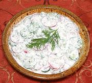

|
Cucumber & Radish SaladRussia, Ukraine - Salat iz Ogurtsov i Rediski (Russia) | Salat z Ohirkiv ta Redys (Ukraine) | ||||
| Serves: Effort: Sched: DoAhead: |
5 salad ** 30 min Yes |
This refreshing appetizer salad is a fine alternative to the usual cucumber sour cream salads, and much less tart than plain vinegared cukes - makes 11 ounces. | |||
|
10 1 10 ------ 3 1/4 1 1/4 ------ |
oz t oz --- c c t --- |
Cucumbers (1) Salt (2) Radishes (3) -- Dressing Scallions Dill, fresh Sour Cream Pepper ----------------- |
Make - (30 min)
|